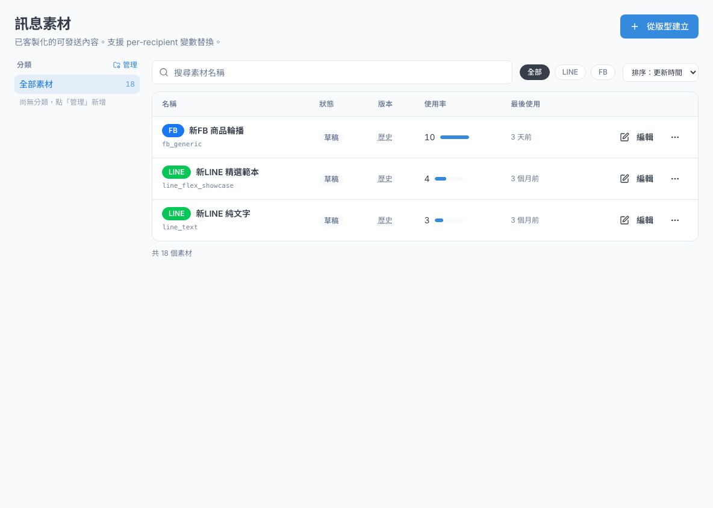
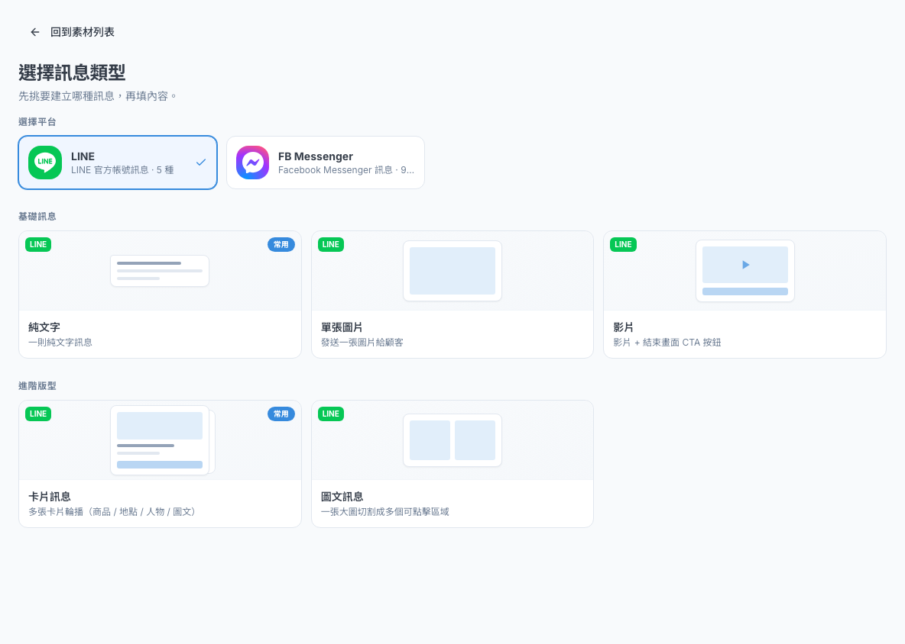
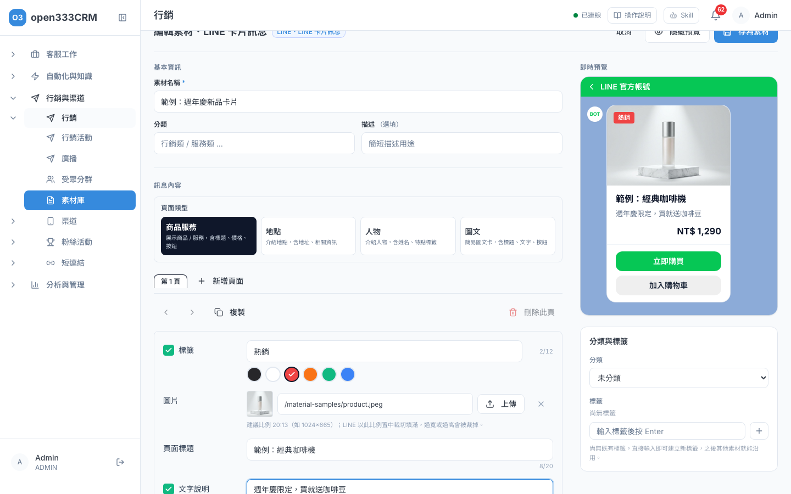
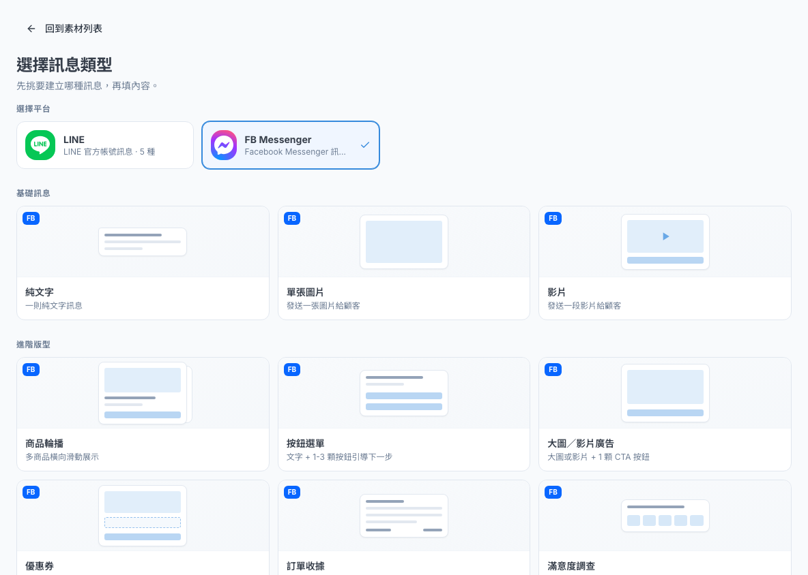
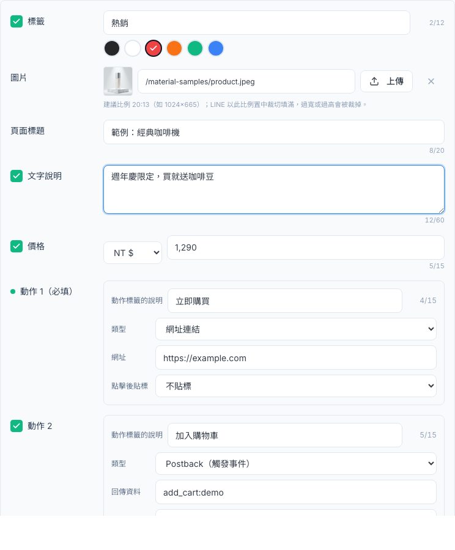
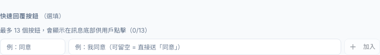
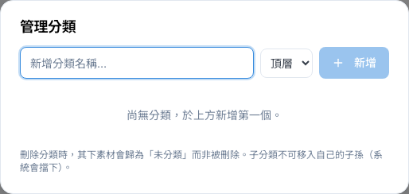
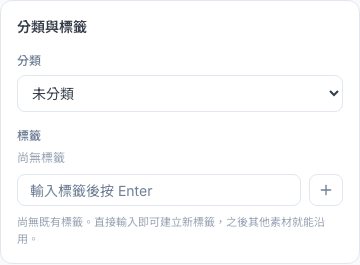
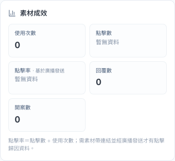
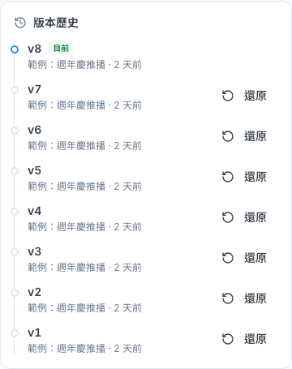

CHAPTER 09 · 行銷與渠道
素材庫
所有要發給客戶的訊息內容都先在這裡做好：選平台、選版型、填內容、看預覽，存成素材後，廣播與關鍵字回覆都能直接拿來用。
1 這頁能做什麼
素材庫是所有「要發給客戶的訊息」的倉庫。先在這裡把訊息做好、看過預覽，之後廣播（第 08 章）和關鍵字回覆（第 10 章）都直接挑素材來用，不用每次重做。從側欄「行銷與渠道 › 行銷 › 素材庫」進來，頁面標題是「訊息素材」。
步驟 1
選平台
LINE 或 FB Messenger
步驟 2
選版型
純文字、圖片、卡片訊息……
步驟 3
填內容
在編輯器填文字、圖片、按鈕
步驟 4
看預覽、存檔
右邊即時預覽，確認後「存為素材」
找素材分類、標籤、搜尋、排序
建立素材選平台、選版型、填內容、看預覽
LINE 版型怎麼選5 種版型的使用時機
FB 版型怎麼選9 種版型的使用時機
按鈕動作與快速回覆按鈕點了要做什麼
分類與標籤把素材整理好，之後好找
成效與版本歷史看使用成效、還原舊版本
ℹ️
素材庫本身不會發任何訊息給客戶，可以放心練習。看素材需要「檢視行銷」權限；新增、修改、複製、刪除素材與管理分類，需要管理員開給你「管理行銷」權限。
2 找素材

- 分類：左側點「全部素材」或某個分類，只看那一類。分類旁的「管理」可以新增分類（見第 7 節）。
- 標籤：素材有貼標籤時，左側會多出標籤，點了只看有那個標籤的素材（可以多選，有任一個就會列出）。
- 搜尋：上方搜尋框打關鍵字，會比對素材名稱和描述。
- 全部／LINE／FB：只看某個平台的素材。
- 排序：最近使用、使用次數、更新時間、名稱。
表格每列可以看到平台（LINE／FB 標籤）、名稱、使用次數與最後使用時間。按「編輯」修改內容；按「⋯」可以「複製」一份或「刪除」。
ℹ️
列表一次最多顯示 50 個素材。素材很多時，請用分類、搜尋或 LINE／FB 篩選縮小範圍。「狀態」欄目前都會顯示「草稿」，這不影響素材能不能被廣播使用。刪除後的素材不會出現在列表，畫面上也沒有復原功能，刪除前請確認。
3 建立素材
下面的影片示範做一則 LINE「卡片訊息」：選平台、選版型、填內容，一邊看右邊的即時預覽。
- 素材列表右上角按「從版型建立」。
- 在「選擇平台」點「LINE」或「FB Messenger」。
- 下方點一種訊息類型（版型）。不知道選哪個，請看第 4、5 節的表格。
- 進到編輯器後，先在「基本資訊」填「素材名稱」（必填，只給內部辨識用，客戶看不到）和「描述」。
- 在「訊息內容」填文字、上傳圖片、設定按鈕。右邊「即時預覽」會跟著變，看起來就是客戶收到的樣子。
- 確認無誤後按右上角「存為素材」。不想存就按「取消」。


ℹ️
編輯器一開始會帶入示範內容（示範圖片、
example.com 網址等），方便你看版面。請把示範內容全部換成你自己的，不然客戶會收到示範圖和示範連結。ℹ️
「基本資訊」裡也有一個「分類」文字欄，那是舊欄位，列表的分類篩選用不到。要替素材分類，請用右邊「分類與標籤」裡的「分類」下拉選單（第 7 節）。
存檔時的檢查
- LINE 素材存檔時，系統會把內容送去 LINE 檢查格式（只檢查、不會發送）。不符合 LINE 規定時，上方會出現紅框，告訴你哪個欄位有問題。
- Facebook 素材也會檢查必填欄位和字數，不符合時一樣會顯示原因。
- 「存為素材」按鈕變灰時，下方會有一行「無法儲存：…」說明原因（例如 LINE 影片網址不正確）。
- 按左上角「重新選擇類型」或「取消」會直接離開，已填的內容不會保留，請先存檔。
4 LINE 版型怎麼選
| 版型 | 長什麼樣子 | 什麼時候用 |
|---|---|---|
| 純文字 | 一則文字訊息，最多 5000 字 | 一般通知、公告、提醒。最簡單也最常用。 |
| 單張圖片 | 一張圖片 | 海報、DM、活動主視覺。圖片本身就說完重點時。 |
| 影片 | 一支可在聊天室播放的影片 | 產品示範、活動花絮。 |
| 卡片訊息 | 多張卡片左右滑動，每張有圖、標題、說明和按鈕 | 一次介紹好幾個商品、門市地點或人物（例如設計師），客戶可以直接點按鈕購買或預約。 |
| 圖文訊息 | 一張大圖切成好幾個可以點的區域 | 一張設計好的圖，不同位置點進不同網址，例如「新品／優惠／門市」三塊。 |
影片的規定
- 「影片」要填可以直接下載的 mp4 檔網址（https 開頭、結尾是
.mp4），或按「上傳」直接上傳檔案，200MB 以內。 - YouTube、Vimeo、Google 雲端硬碟的分享連結都不能用。
- 「縮圖」是影片還沒播放前顯示的圖片，請一定要上傳，1MB 以內。
卡片訊息
- 「頁面類型」先選一種：商品服務（有價格）、地點（有地址、營業時間或電話）、人物（有姓名和特點）、圖文（簡單的圖、標題、說明）。
- 每一頁填「圖片」「頁面標題」（人物是「姓名」），需要的話勾選「文字說明」「價格」「地址」等欄位再填。圖片建議 20:13 的比例（例如 1024×665）。
- 「動作 1」是卡片上的主要按鈕，一定要設定；需要第二顆按鈕就勾「動作 2」（見第 6 節）。
- 按「新增頁面」加卡片，最多 10 頁；用工具列的左右箭頭調整順序，「複製」複製這一頁，「刪除此頁」刪除。
- 想在最後放一張「看更多」的卡片，勾選「新增結尾頁」。
⚠️
「頁面類型」請在一開始就決定好。做到一半才切換頁面類型，已經設定的結尾頁和快速回覆按鈕會被清掉，而且不會有提示。
圖文訊息
- 在「版型」按「選擇版型」（或「變更版型」），從正方形、橫長、縱長裡挑一種切法。
- 「底圖」上傳設計好的圖片，比例要和版型一致（系統會檢查）。預覽圖上會用虛線標出每個區域的編號。
- 在「互動區域」替每個區域設定點了要做什麼（傳一段文字，或開一個網址）。每個區域都要設定。
ℹ️
版型清單裡還有「自訂」，但自訂版型目前固定是正方形，上傳非正方形的圖時點擊區域會對不準，建議先用正方形、橫長、縱長的現成版型。
ℹ️
以前建立的「精選範本」「匯入 Flex JSON」素材仍可以打開編輯和使用，但這兩種版型目前不能新建。
5 FB 版型怎麼選

| 版型 | 長什麼樣子 | 什麼時候用 |
|---|---|---|
| 純文字 | 一則文字，最多 2000 字 | 一般通知、公告。 |
| 單張圖片 | 一張圖片 | 海報、活動主視覺。 |
| 影片 | 一段影片（可直接上傳，25MB 以內） | 短的產品示範影片。 |
| 商品輪播 | 1～10 張卡片左右滑動，每張有標題、副標題、圖片和最多 3 顆按鈕 | 一次介紹多個商品。 |
| 按鈕選單 | 一段文字加 1～3 顆按鈕 | 請客戶選下一步，例如「查訂單／找門市／問客服」。 |
| 大圖／影片廣告 | 一張大圖或一段影片 | 需要大版面的視覺。這個版型要用 Facebook 上的素材，一般建議改用「單張圖片」或「影片」。 |
| 優惠券 | Messenger 的優惠券卡片，有標題、折扣碼和圖片 | 發折扣碼給客戶。折扣碼不能有空格。 |
| 訂單收據 | 電商訂單明細（收件人、訂單編號、金額等） | 下單後的確認通知。幣別要填 3 個大寫英文字母，例如 TWD。 |
| 滿意度調查 | 請客戶評分的問卷（滿意度 5 級、推薦度 11 級、費力度 7 級） | 服務結束後收集回饋。「標題」必填，「有效天數」只能填 1～7。 |
ℹ️
這裡的「優惠券」只是 Facebook 的一種訊息樣式，用來把折扣碼發給客戶，不會記錄誰領了、誰用了。
6 按鈕動作與快速回覆
LINE 卡片訊息的按鈕、圖文訊息的區域，都要設定「點了要做什麼」。

| 欄位 | 說明 |
|---|---|
| 動作標籤的說明 | 按鈕上顯示的字，例如「立即購買」。 |
| 類型：文字訊息 | 客戶點了，會自動幫他送出一段文字（例如「我要預約」），適合搭配關鍵字回覆。 |
| 類型：網址連結 | 客戶點了開啟一個網址。也可以填 tel:0912345678 讓客戶直接撥電話。 |
| 類型：Postback（觸發事件） | 客戶點了不會送出文字，只會讓系統收到一個通知。一般用不到，搭配「點擊後貼標」時才會用。 |
| 點擊後貼標 | 客戶點了這顆按鈕，系統自動替他貼上選定的標籤。例如點「我要看冰箱」就貼「冰箱興趣」，之後可以用受眾分群挑出這群人。 |
快速回覆按鈕（LINE 專用）
LINE 素材的編輯器最下面有「快速回覆按鈕（選填）」，可以在訊息底下加一排泡泡按鈕，客戶點了就會送出你設定的文字。

- 左邊框填按鈕上的字（最多 20 字），例如「同意」。
- 右邊框填客戶點了要送出的文字（可以留空，留空就送出跟按鈕一樣的字）。
- 按「加入」，按鈕才會真的加進去。最多 13 個。
ℹ️
只打字沒按「加入」就存檔，那顆按鈕不會被存進去。客服在收件匣回訊息時也能帶入快速回覆，常用的按鈕組可以到「LINE 快速回覆」存成預設組（第 10 章）。
7 分類與標籤
素材一多就不好找，建議一開始就替素材分類、貼標籤。
管理分類
- 素材列表左側「分類」旁邊按「管理」。
- 在「新增分類名稱…」輸入名稱，右邊選「頂層」或放在某個分類底下（最多兩層），按「新增」。
- 每個分類右邊的鉛筆可以改名，垃圾桶可以刪除。

ℹ️
刪除分類時，底下的素材會變成「未分類」，素材本身不會被刪掉。但如果刪的是上層分類，它底下的子分類也會一起消失。
替素材設定分類與標籤
在素材編輯器右邊的「分類與標籤」：
- 分類：從下拉選單選一個分類。
- 標籤：輸入後按 Enter（或「＋」）貼上，可以貼好幾個；下方會建議常用標籤，點一下就貼上。每個標籤最多 40 字，一個素材最多 20 個。

8 成效與版本歷史
打開一個已經存好的素材（列表按「編輯」），右邊會多出「素材成效」和「版本歷史」兩塊。
素材成效

| 數字 | 意思 |
|---|---|
| 使用次數 | 這則素材被廣播用了幾次。 |
| 點擊數 | 素材裡的網址被點了幾次。廣播發送時，系統會自動把素材裡的網址換成可追蹤的短連結，所以有放網址的素材才會有這個數字。 |
| 點擊率 | 點擊數占所有廣播收件人數的比例。 |
| 回覆數 | 收到這則素材的廣播後，有回訊息的人數。 |
| 開案數 | 收到廣播後開了工單的數量。 |
版本歷史
每次按「存為素材」都會留下一個版本（v1、v2、v3…），最新的標「目前」。改壞了可以回到舊版本：
- 在「版本歷史」找到想回去的版本，按右邊的「還原」。
- 確認視窗按「確定」。目前的內容會被換成那個版本，同時新增一個版本，原本的歷史不會不見。

⚠️
還原前，先把編輯器裡還沒存的修改存起來，還原會直接蓋掉畫面上的內容。
ℹ️
用「⋯ › 複製」做出來的素材，名稱後面會加上「(copy)」，不會帶原本的分類和標籤，版本歷史也從頭開始。